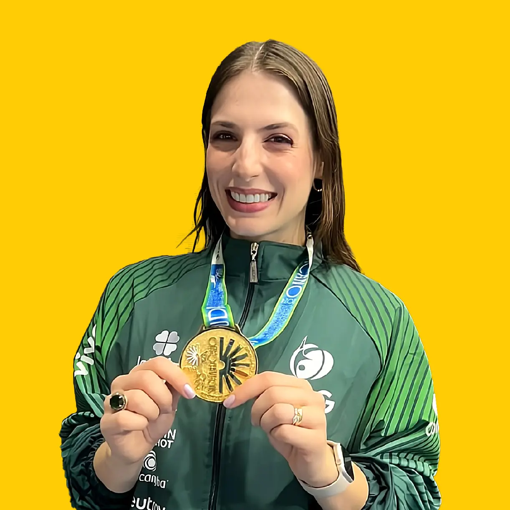

Destacada figura de la gimnasia rítmica internacional, capitana de la Selección Brasileña (2012-2015) y referente en la formación de élite.
Nacida en Cambé, Paraná, reside actualmente en Londrina, donde forja el futuro del deporte en el prestigioso club ADR Unopar. Es graduada en Educación Física con especialización en Gimnasia Rítmica por la Universidade Norte do Paraná.
Hitos como Gimnasta
| Competencia | Logro / Título | Año |
|---|---|---|
| Juegos Panamericanos (Guadalajara) | Campeona General de Conjuntos | 2011 |
| Juegos Panamericanos (Guadalajara) | Campeona (5 Bolas) | 2011 |
| Campeonato Sudamericano (Venezuela) | Campeona de Conjuntos | 2011 |
| Campeonato Sudamericano (Colombia) | Campeona de Conjuntos | 2012 |
| Copa del Mundo (Bielorrusia) | Tercer Lugar | 2013 |
Experiencia Internacional como Entrenadora
Ha desempeñado un papel fundamental como asesora técnica y entrenadora en diversas selecciones nacionales:
Selección Nacional (2022) y Team San Diego (2024). Ahora, primer club capitalino con Débora, Club GR Alcaldía de Caracas (2026).
Asesoría técnica a la Selección Nacional (2023).
Colaboración con la Selección Nacional (2022).
Federación Paraguaya y Conjunto AC2 (2023).
Colaboración con el Team Valuci en Lima (2025).
Además, ha liderado estadios de entrenamiento para delegaciones de Colombia 🇨🇴 y Guatemala 🇬🇹.
Aquecendo com Ritmo
La técnica "Aquecendo com Ritmo" (Calentando con Ritmo) es el sello distintivo de la metodología de Débora Falda, donde fusiona su vasta experiencia práctica con sus investigaciones académicas sobre fisiología del ejercicio y fatiga muscular.
¿En qué consiste?
Calentamientos que integran el manejo de aparatos y dificultades corporales con una estructura rítmica rigurosa, basada en estudios de fisiología del ejercicio.
Beneficios
- ✓ Optimización del Rendimiento
- ✓ Conexión Cuerpo-Aparato
- ✓ Estimula memoria coreográfica
- ✓ Prevención de Lesiones
- ✓ Enfoque Psicológico
Débora llega a Venezuela para compartir esta visión innovadora, buscando elevar el nivel técnico y artístico de las participantes a través de una metodología que equilibra la disciplina brasileña con la ciencia deportiva de vanguardia.